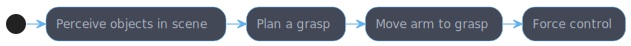
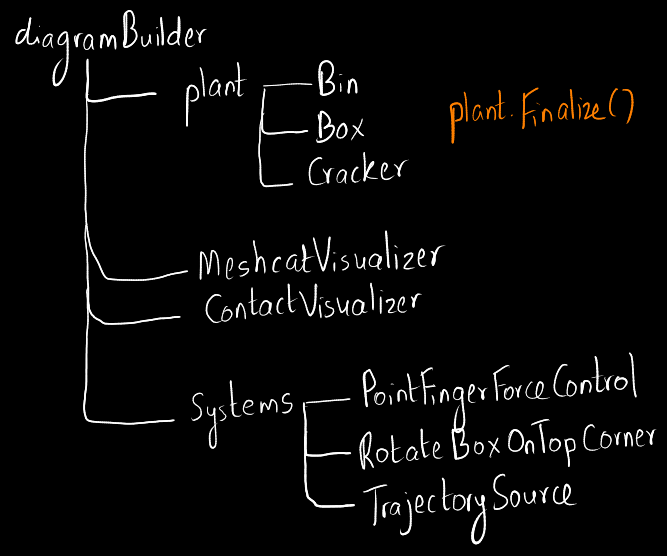
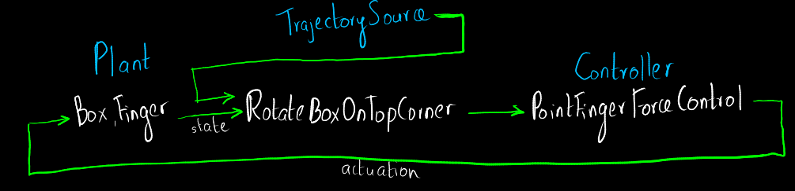
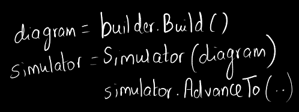

Where does force control fit in the manipulation pipeline:

The first part of the pipeline is predominantly kinematic but there are forces involved
when making a contact. Nonprehensile manipulation means
'manipulation without grasping'. Strategies like
sliding and environmental contact is used when grasping.
The first step in solving a nonprehensile task is to come up with a simple model.
Restrict DOF for both object and bot
Simplify the gripper
One needs to come up with 2 dynamic models:
One is used for simulation
Includes the bot and the object(s).
The other is the robot model used for designing the controllers
The bot experiences unmodelled contact forces in this case.
$$\begin{bmatrix}m &
0 \\ 0 & m \end{bmatrix} \dot{v} = m \begin{bmatrix}\ddot{x} \\ \ddot{z}
\end{bmatrix} = mg + \begin{bmatrix} u_x \\ u_z \end{bmatrix} + f^c,$$ where
$m$ is the mass, $g = [0, -9.81]^T$ is the gravity vector, $u$ is the
control input vector, and $f^c$ is the contact force (from the world to the
finger).
Flip-up Project
There are 3 stages to simulating a drake project:
Add systems

Connect

Build and simulate

Questions & Todo
Contact jacobian
Which pre-multiplies the contact forces? In the case of a point finger this Jacobian
is always the identity matrix.
Quaternion floating base coordinates
In the simple model, does $mg$ have an effect on the object when moving in the
$x$ direction? It seems like it does from the equation in section 7.1.
Why does the 2nd dynamic model talk about unmodelled forces? Are they modelled
in the 1st case?
In the direct force control part, when not in contact, I don't understand how
we get $m\dot{v} = -f^{c_{d}}$
I don't understand the flip-up equations too well. Perhaps, looking at pushing a book
against a wall problems might help -
ref1, ref2,
google search.